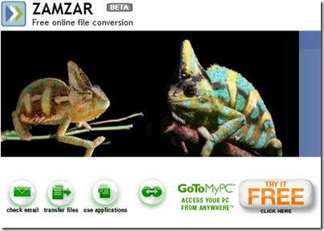
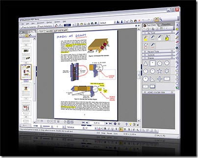
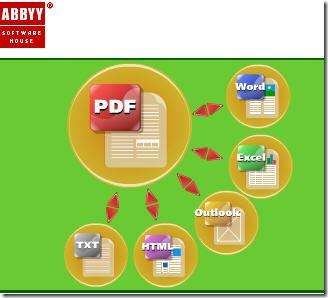
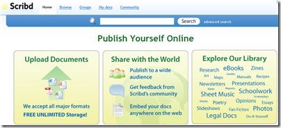

http://hiphotos.baidu.com/hxzon/pic/item/62dd3f12b121f006f919b858.jpg
我们知道很多种分割合并制作PDF的软件和方法。但我们还是推荐你使用这些最受欢迎的方法。这里推荐的工具和服务有些是免费版的，当然也有需要付费的。尽管如此，他们仍然比我们熟知的一些软件要便宜的多~
在线PDF转换
 http://hiphotos.baidu.com/hxzon/pic/item/8803842636c55e408b82a158.jpg
Adobe公司的 Create PDF Online 能够将包括网页在内的多种形式转换为 Adobe PDF。在网站上我们还可以做图像和文字的扫描识别。（在国内能做这个的真的不多~）
BCL Technology的 PDF Online 能够在人们最需要它的时候快速的生成PDF文件。作为他们的基本服务, 无论你身处哪里，家里，公司还是世界的任何角落，PDF Online 都能帮助你从PC, Mac,或者 Linux上生成PDF文件。
ESP的 PDF-o-matic运用简单的PHP脚本语言帮你完成转换。
Neevia 不需要安装任何软件，即可帮你直接完成由其他文件转换成 PDF或者是图像。
PDF4U 简单两步即可在线创建PDF文件。你可以上传到服务器在线转换，也可以下载免费的PDF4U Printer转换器.
Text2PDF是一个非常灵活又强有力的能转换文件，报告，表格到PDF的工具。具有多种语言选择，包括中，日，韩，徳，泰，希伯来等。
Loop Service 同样是一款基于网络的上传文件，转换为PDF的工具，不需安装任何软件。
Zamzar 在线转换，不需安装软件，支持多种格式转换，而且格式正在不断增加中。
您现在看到的文章来自于[布瓜堂-关注小事成就大事]我们关注方便实用的在线工具http://www.buguat.com
桌面转换
 http://hiphotos.baidu.com/hxzon/pic/item/33b3801830409ae34bedbc58.jpg
Ghostscript 是一个能提供与PDF和与其相关文件服务的软件. Ghostscript 是一系列相关软件的合称。
Softland的 doPDF对于个人和商业使用都是免费的。使用doPDF通过选择“打印”命令你可以创建具有搜索功能的PDF文件。轻轻点击，即可完成由Excel, Word或者是 PowerPoint，甚至是电子邮件和你喜欢的网站PDF的转换。
PDF995 能够轻松创建具有专业品质的PDF文件。界面亲和，点击“打印”即可直接完成多种格式的转换 ，还具有阅读器可以马上预览结果。 Pdf995支持网络文件的保存，共享打印，页面定制和大尺寸打印。
Google Docs——很知名吧？具有把文件保存成PDF的功能，同样通过简单的步骤即可完成共享。
http://hiphotos.baidu.com/hxzon/pic/item/fdd0dcb442d76e248ad4b258.jpg
ActivePDF的 PrimoPDF 通过PrimoPDF® printer几秒之内就可完成由 Word, Excel等多种格式到PDF的高质量转换。
MyPDFCreator 除了具有创建高质量PDF文件功能外，还具有安全管理和合并多个文件的功能。
CutePDF Writer 几乎能从打印方式支持所有文件格式到高质量PDF的转换。个人和商务使用都是绝对免费的。无水印，无广告，支持64位的 Windows.
PDF Creator 能够通过 Windows应用程序方便的创建文件。使用方式和Word, StarCalc的打印功能类似.
Global Graphics的 Jaws PDF Creator 提供了高质量的转换，及注释，合并等功能于一体。特别适合单用户，小公司办公和企业团体。
OpenOffice ——熟知的开源办公软件，同样具有转换PDF的功能。
Nuance的 PDF Converter需要付费，但是你一旦使用，就会发现你无法离开他了，因为许多功能实在是太棒了！(包括右键菜单中许多你想象不到的强大功能).
e-PDF Converter能够将 PDF反转为文件，表格，而且看上去和以前的一模一样。而且，它的费用是其他类似软件的 1/3。
Smart PDF Converter简单易用又功能强大。能将PDF转换为可编辑的Word，或者是HTML,TXT, XLS, JPEG, RTF, TIFF和其他格式的文件.
DocuDesk的 deskPDF 能创建100%兼容Adobe Acrobat的PDF文件。无论你是Microsoft Office用户,或者是 CAD的使用者,或者是什么其他300多款软件的使用者，deskPDF只需简单一步即可轻松完成PDF专业级的制作。
Bluebeam的 PDF Revu 对那些需要简单又智能的转换方案的用户来说可算是最理想的了. Bluebeam可以在Word, Excel 或者是PowerPoint的控制工具面板中田间控制按钮，所以转换步骤就会变得前所未有的简单 。而对于其他 Windows 软件(比若说WordPerfect, Outlook, image files来说.) Bluebeam提供了Bluebeam PDF Printer创建驱动，直接创建PDF ，还支持其他九种文件的转换，真的是十分简单啊.
Foxit Reader ——我们常用的PDF阅读器。自身同样具有编辑和创建的功能 .
Sowedoo的 EasyPDF Converter 能帮你在数秒内完成地图，建议书，报告，笔记到高质量安全的PDF文件的转换。而且你还可以通过互联网共享，或者通过电子邮件发送，而且毫无困难
您现在看到的文章来自于[布瓜堂-关注小事成就大事]我们关注方便实用的在线工具http://www.buguat.com
MIX YOUR PDFs

http://hiphotos.baidu.com/hxzon/pic/item/0456181771bbf9564b90a758.jpg
ABBYY PDF Transformer 融合了PDF创建和转换的功能. 能迅速将PDF转换成 Microsoft Word, Excel, HTML或 TXT多种格式。也提供了由Microsoft Word , Excel , PowerPoint 或者 Visio diagram转换成PDF的功能。
免费的 PDF Text Reader支持方便，快速的转换 。同样也支持输出到文本，复制到剪贴板，局部选中和标签浏览功能。无需第三方软件，个人用户100%免费，无广告，无间谍程序。
PDF U Append 能够自动的帮助你将多个文件添加合并为一个PDF，而且还能添加许多有趣的元素在里面。
Apago 提供了一种管理PDF，后记，评论多种格式的创新模式。
PDF2Text 专注于把PDF文件转换为文本文件和xml文件。同样也提供了将多种格式文件转换为文本和XML的工具，比如Word=》 Text, Excel=》Text,Excel=》XML, Excel=》CSV, PowerPoint=》 Text.
VeryPDF的 Advanced PDF Tools是一个快速而且易用的PDF制作工具，它能帮你把数据轻松合并进单篇PDF，或者制作多篇合并，还可以帮你设立页面图层，设定页面尺寸，标签宽度等细节，定制浏览器，而这些设定都将被存储到一个小小的PDF文件中。
Batch Stamp Tool 是一个补丁工具能帮你在pdf中打水印和贴印章。
您现在看到的文章来自于[布瓜堂-关注小事成就大事]我们关注方便实用的在线工具http://www.buguat.com
烧制PDF

http://hiphotos.baidu.com/hxzon/pic/item/4128bf01b7a9b654728da558.jpg
Scribd 能帮你在线发布和挖掘PDF。它就像一个允许任何人上传文件的资料库，具有FLASH预览界面能够让你马上在浏览器中预览文档。网站上同样有各种各样能更方便和有乐趣发布，转换，分享阅读的小工具。
4Shared 提供了5 GB的免费存储空间和PDF共享通道。
DriveHQ 能帮你不论从任何地方任何时间在线存储分享。
YouScript 免费在线服务，允许用户与其他人分享自己的作品。
My Docs Online 能帮助个人或者商务团体进行在线存储，在线备份，传送和协作任务。